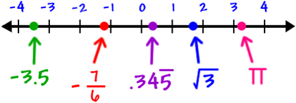

Ciencias Aplicadas I · Capítulo 1
Fundamentos de las ciencias aplicadas
Ciencias aplicadas
Matemáticas: números, operaciones y proporcionalidad
- Los números que usamos
- El sistema decimal y las operaciones
- Operaciones combinadas
- Magnitudes y proporcionalidad
Los números que usamos
Los números sirven para contar, medir, ordenar y comparar. No todos son iguales: cada grupo incluye al anterior y añade números nuevos.
- Los números naturales ($\mathbb{N}$) se usan para contar: 1, 2, 3, 4…
- Los números enteros ($\mathbb{Z}$) incluyen los naturales, el cero y los negativos: … −3, −2, −1, 0, 1, 2, 3…
- Los números racionales ($\mathbb{Q}$) se pueden escribir como una fracción. Por ejemplo, $\frac{1}{2} = 0{,}5$ y $\frac{3}{4} = 0{,}75$. Los decimales exactos y los periódicos son racionales.
- Los números irracionales tienen infinitas cifras decimales sin repetirse siguiendo un patrón. No se pueden escribir como fracción: $\pi = 3{,}14159\ldots$ o $\sqrt{3} = 1{,}73205\ldots$
- Los números reales ($\mathbb{R}$) reúnen todos los anteriores. Son los números que podemos colocar en una recta numérica.

Resumen
$\mathbb{N}$ está dentro de $\mathbb{Z}$; $\mathbb{Z}$ está dentro de $\mathbb{Q}$; y los racionales e irracionales forman $\mathbb{R}$.
Cuando te pidan clasificar un número, indica el conjunto más pequeño al que pertenece.
La recta numérica
En una recta numérica, los números pequeños están a la izquierda y los grandes, a la derecha. El cero es el origen. Los negativos quedan a su izquierda y los positivos a su derecha.
Actividades
- Indica el conjunto más pequeño al que pertenece cada número: $12$; $-7$; $0{,}25$; $\frac{5}{3}$; $\pi$; $0$.
- Ordena de menor a mayor: 3,2; −1; 0; −3,5; 3,02; 2,9.
- Dibuja una recta numérica y sitúa: −2,5; −1; 0,75; 2; 3,5.
- Escribe un ejemplo de número natural, entero negativo, racional e irracional.
El sistema decimal y las operaciones
Nuestro sistema de numeración es decimal porque usa diez cifras: 0, 1, 2, 3, 4, 5, 6, 7, 8 y 9. También es posicional: una misma cifra vale cosas distintas según el lugar que ocupa.
Por ejemplo:
Descomponer un número
En $51 268$, el 5 vale 50 000; el 1 vale 1 000; el 2 vale 200; el 6 vale 60 y el 8 vale 8.
$$51\,268 = 50\,000 + 1\,000 + 200 + 60 + 8$$
Al sumar o restar por escrito, coloca cada cifra en su columna: unidades debajo de unidades, decenas debajo de decenas y así sucesivamente. Multiplicar equivale a sumar varias veces la misma cantidad. Dividir es repartir una cantidad en partes iguales.
En una división, el dividendo es la cantidad que se reparte; el divisor, el número de partes; el cociente, lo que corresponde a cada parte; y el resto, lo que sobra si la división no es exacta.
Nota
Una calculadora suele mostrar decimales en vez del resto. Por ejemplo, $17 \div 5 = 3{,}4$: el cociente entero es $3$ y sobran $2$ unidades, porque $5 \times 3 + 2 = 17$
Actividades
- Descompón: a) 7 304; b) 42 090; c) 305 018.
- Calcula: a) $2\,458 + 679$; b) $9\,003 - 4\,786$; c) $326 \times 7$; d) $148 \times 24$.
- Haz las divisiones e indica el cociente y el resto: a) $96 \div 8$; b) $157 \div 6$; c) $425 \div 12$.
- En una caja hay 144 tornillos. Se guardan en bolsas de 10. ¿Cuántas bolsas completas se llenan? ¿Cuántos tornillos sobran?
Operaciones combinadas
Cuando una expresión tiene varias operaciones, no se puede calcular de cualquier manera. Sigue siempre este orden:
- Paréntesis y corchetes.
- Multiplicaciones y divisiones, de izquierda a derecha.
- Sumas y restas, de izquierda a derecha.
Paso a paso
Calcula $6 + 4 \times (2 + 3) - 10$.
- Paréntesis: $6 + 4 \times 5 - 10$
- Multiplicación: $6 + 20 - 10$
- Suma y resta: $26 - 10 = 16$
Los paréntesis cambian el orden habitual. Por eso $3 + 4 \times 2 = 11$, mientras que $(3 + 4) \times 2 = 14$.
Actividades
- Calcula: a) $18 - 3 \times 4$; b) $(18 - 3) \times 4$; c) $36 \div 6 + 5 \times 3$.
- Calcula: a) $40 + 20 \div 5 - 2$; b) $7 \times (12 - 8) + 9$; c) $48 \div (3 \times 4)$.
- Escribe los paréntesis necesarios para que $6 + 2 \times 5$ dé como resultado $40$.
Magnitudes y proporcionalidad
Una magnitud es una propiedad que se puede medir y expresar con un número y una unidad: una longitud, una masa, un tiempo o una temperatura.
Dos magnitudes son directamente proporcionales cuando cambian en el mismo sentido y en la misma proporción. Si se duplica una, se duplica la otra. Por ejemplo, si para 4 personas se necesitan 200 g de arroz, para 8 personas se necesitan 400 g.
| Personas | Arroz |
|---|---|
| 2 | 100 g |
| 4 | 200 g |
| 8 | 400 g |
Dos magnitudes son inversamente proporcionales cuando una aumenta y la otra disminuye en la misma proporción. Por ejemplo, para realizar el mismo trabajo, cuantos más trabajadores hay, menos tiempo se necesita.
Proporcionalidad directa
3 kg de naranjas cuestan 7,50 €. ¿Cuánto cuestan 5 kg?
Primero comprobamos que más kilos implican más precio. Después:
$$ 3 \rightarrow 7,50 \\ 5 \rightarrow x \\ x = 5\times 7,50 \div 3 \\ x = 12{,}50\,\text{euros}$$
Proporcionalidad inversa
4 personas tardan 6 horas en limpiar un espacio. Si trabajan 8 personas al mismo ritmo, ¿cuánto tardan?
Hay el doble de personas, así que tardarán la mitad: 3 horas. También se puede calcular: $4 \times 6 \div 8 = 3$.
$$ 4 \rightarrow 6 \\ 8 \rightarrow x \\ x = 4 \times 6 \div 8 \\ x = 3 $$
Actividades
- Indica si la relación es directa o inversa: a) número de cuadernos y precio; b) velocidad y tiempo para recorrer la misma distancia; c) horas trabajadas y sueldo, si se cobra por hora.
- Para 6 bocadillos se usan 450 g de pan. ¿Cuántos gramos se necesitan para 10 bocadillos?
- Una máquina fabrica un pedido en 12 horas. Si se usan 3 máquinas iguales trabajando a la vez, ¿cuánto tardarán?
- Un grifo llena 80 L en 4 minutos. ¿Cuántos litros llenará en 15 minutos al mismo ritmo?
Resumen
- Los números se clasifican en naturales, enteros, racionales, irracionales y reales.
- En el sistema decimal, el valor de una cifra depende de su posición.
- En las operaciones combinadas: paréntesis → multiplicaciones y divisiones → sumas y restas.
- En una proporcionalidad directa, las dos magnitudes aumentan o disminuyen juntas; en una inversa, una aumenta cuando la otra disminuye.
Física: magnitudes y unidades de medida
- Medir y usar el Sistema Internacional
- Longitud y cambios de unidad
- Volumen y capacidad
Medir y usar el Sistema Internacional
Medir es comparar una magnitud con una unidad. El resultado de una medida siempre debe incluir un número y una unidad: no basta decir «mide 4»; hay que decir «mide $4\,\mathrm{m}$» o «mide $4\,\mathrm{cm}$».
Para que las medidas se entiendan en cualquier lugar se utiliza el Sistema Internacional de Unidades (SI). Estas son algunas de sus magnitudes básicas:
| Magnitud | Símbolo de la magnitud | Unidad del SI | Símbolo de la unidad |
|---|---|---|---|
| Longitud | l | metro | m |
| Masa | m | kilogramo | kg |
| Tiempo | t | segundo | s |
| Temperatura | T | kelvin | K |
| Intensidad de corriente | I | amperio | A |
| Intensidad luminosa | Iv | candela | cd |
| Cantidad de sustancia | n | mol | mol |
Masa y peso no son lo mismo
La masa indica la cantidad de materia de un cuerpo y se mide en kilogramos. El peso es una fuerza: depende de la gravedad y se mide en newtons (N).
Para evitar números enormes o diminutos se usan prefijos. Los más habituales son kilo- ($\mathrm{k}$, mil veces), hecto- ($\mathrm{h}$, cien veces), deca- ($\mathrm{da}$, diez veces), deci- ($\mathrm{d}$, una décima), centi- ($\mathrm{c}$, una centésima) y mili- ($\mathrm{m}$, una milésima).
Actividades
- Indica la magnitud y una unidad adecuada para medir: a) la duración de una carrera; b) la masa de una mochila; c) la temperatura de una habitación.
- Completa: a) 1 km = ___ m; b) 1 m = ___ cm; c) 1 kg = ___ g; d) 1 mL = ___ L.
- Corrige estas medidas incompletas: «La mesa mide 120»; «La botella contiene 1,5».
- ¿Qué unidad elegirías para el grosor de una moneda: km, m, cm o mm? Justifica tu respuesta.
Longitud y cambios de unidad
La longitud expresa la distancia entre dos puntos. La unidad del SI es el metro (m), pero elegimos múltiplos y submúltiplos según el tamaño de lo que medimos.
| km | hm | dam | m | dm | cm | mm |
|---|---|---|---|---|---|---|
| / 10 | / 10 | / 10 | 1 | × 10 | × 10 | × 10 |
Al avanzar una casilla hacia la derecha, multiplicamos por 10. Al avanzar hacia la izquierda, dividimos por 10. Con decimales, esto equivale a desplazar la coma una posición por cada salto.
Dos conversiones
$$2{,}5\,\mathrm{km} = 2\,500\,\mathrm{m}$$
De $\mathrm{km}$ a $\mathrm{m}$ hay tres saltos a la derecha.
$$384\,\mathrm{cm} = 3{,}84\,\mathrm{m}$$
De $\mathrm{cm}$ a $\mathrm{m}$ hay dos saltos a la izquierda.
Antes de calcular, escribe la equivalencia que vas a usar y revisa si el resultado tiene sentido. Una puerta no puede medir $2\,000\,\mathrm{m}$: seguramente mide $2\,000\,\mathrm{mm}$ o $2\,\mathrm{m}$.
Actividades
- Convierte: a) 4,7 km a m; b) 325 cm a m; c) 0,86 m a mm; d) 12 500 mm a m.
- Convierte: a) 3,45 hm a cm; b) 68 dm a m; c) 0,009 km a m.
- El largo de una mesa es 1,20 m y su ancho 65 cm. Expresa las dos medidas en centímetros.
- Elige una unidad razonable para: a) la distancia entre dos ciudades; b) el ancho de un cuaderno; c) el diámetro de un cable fino.
Volumen y capacidad
El volumen es el espacio que ocupa un cuerpo. En el SI se mide en metros cúbicos ($\mathrm{m}^{3}$). La capacidad indica cuánto puede contener un recipiente. Para la vida diaria se usa mucho el litro ($\mathrm{L}$), una unidad aceptada junto al SI.
Un litro equivale al volumen de un cubo de un decímetro de lado:
En capacidad usamos una escalera parecida a la de longitud:
| kL | hL | daL | L | dL | cL | mL |
|---|---|---|---|---|---|---|
| / 10 | / 10 | / 10 | 1 | × 10 | × 10 | × 10 |
Cambiar de unidad de capacidad
$$6{,}3\,\mathrm{L} = 630\,\mathrm{cL}$$
De $\mathrm{L}$ a $\mathrm{cL}$ hay dos saltos a la derecha.
$$4\,835\,\mathrm{mL} = 4{,}835\,\mathrm{L}$$
De $\mathrm{mL}$ a $\mathrm{L}$ hay tres saltos a la izquierda.
No confundas volumen y capacidad: una piscina ocupa un volumen, mientras que también decimos que tiene una capacidad determinada de agua. En ambos casos se usan unidades relacionadas, pero describen ideas distintas.
Actividades
- Convierte: a) 3,5 L a mL; b) 850 mL a L; c) 2,4 kL a L; d) 75 cL a L.
- Una botella contiene 1,5 L de agua. ¿Cuántos vasos de 250 mL se pueden llenar por completo?
- Indica la unidad más adecuada: a) la dosis de un jarabe; b) el contenido de una lata; c) el agua de una piscina.
- Explica con tus palabras la diferencia entre volumen y capacidad.
Resumen
- Una medida se expresa con un número y una unidad.
- El SI fija unidades comunes para las magnitudes físicas.
- En las conversiones entre unidades consecutivas se multiplica o divide por 10.
- La unidad de longitud es el metro; la del volumen es el metro cúbico; el litro se usa habitualmente para expresar capacidad.
Práctica digital: seguridad y material de laboratorio
En esta práctica elaborarás en el ordenador un documento de consulta sobre el laboratorio. Puedes utilizar Google Docs. Busca la información en fuentes fiables y redacta con tus propias palabras; no copies y pegues textos sin revisarlos.
Formato de entrega
En la primera parte del documento deben aparecer estos datos:
- Título: Seguridad y material básico de laboratorio.
- Autor o autora: tu nombre y apellidos.
- Fecha: día de entrega.
- Asignatura: Ciencias Aplicadas I.
Organiza el resto del trabajo con títulos claros y cuida la ortografía y la presentación; es fundamental.
Contenido obligatorio
Tu documento debe incluir los cuatro apartados siguientes:
- Normas básicas de laboratorio. Escribe al menos ocho normas para trabajar antes, durante y después de una práctica. Incluye normas sobre la protección personal, el orden de la mesa, la lectura de etiquetas, la prohibición de comer o beber, la comunicación de accidentes y la recogida de residuos.
- Pictogramas de peligro. Añade los pictogramas que se utilizan para reconocer los principales peligros químicos. Junto a cada uno escribe su nombre y explica brevemente qué riesgo avisa. Incluye, como mínimo: explosivo, inflamable, comburente, gas a presión, corrosivo, tóxico, peligro grave para la salud, irritante o nocivo y peligroso para el medio ambiente.
- Materiales comunes de laboratorio. Explica para qué sirven los materiales básicos: vaso de precipitados, matraz de Erlenmeyer, tubo de ensayo, probeta, pipeta, embudo, vidrio de reloj, varilla agitadora y placa de Petri. Añade un dibujo de cada material. Puedes realizar los dibujos con una herramienta digital o insertarlos si indicas de dónde proceden.
- Material de sujeción y calentamiento. Describe y añade un dibujo material básico que permite sujetar o calentar con seguridad: gradilla, soporte universal, pinzas, trípode, rejilla, pinzas de madera y mechero de laboratorio. Añade también una norma de seguridad relacionada con el calentamiento: no se calientan recipientes cerrados y la boca de un tubo de ensayo nunca se dirige hacia una persona.
Antes de entregar
Comprueba que el documento contiene los cuatro datos iniciales, los cuatro apartados obligatorios, los nombres de los pictogramas y los dibujos de todo el material solicitado.
Actividades de repaso
- Matemáticas
- Física: unidades y conversiones
Matemáticas
- Indica el conjunto más pequeño al que pertenece cada número: a) $-15$; b) $8$; c) $0{,}125$; d) $\sqrt{3}$; e) $0$.
- Ordena de menor a mayor: $4{,}05$; $-2$; $0$; $4{,}5$; $-2{,}7$; $3{,}99$.
- Descompón el número 608 047 según el valor de sus cifras.
- Calcula: a) $3\,457 + 896$; b) $8\,000 - 3\,764$; c) $245 \times 16$; d) $385 \div 7$. En la división, indica cociente y resto.
- Resuelve respetando la jerarquía: a) $12 + 4 \times 3$; b) $(12 + 4) \times 3$; c) $48 \div 6 + 7 \times 2$; d) $50 - (8 + 2) \times 4$.
- Para hacer 5 batidos se necesitan 750 mL de leche. ¿Cuántos mililitros se necesitan para 8 batidos?
- Se tardan 9 horas en revisar un almacén con 2 personas. Si trabajan 6 personas al mismo ritmo, ¿cuánto tiempo tardarán? Indica si la proporcionalidad es directa o inversa.
Nota
En los problemas, escribe los datos, la operación y una respuesta final con unidad.
Física: unidades y conversiones
- Indica la unidad más adecuada para medir: a) la longitud de una carretera; b) el grosor de un folio; c) la masa de una persona; d) el tiempo de una película.
- Convierte: a) 6,25 km a m; b) 0,45 m a cm; c) 3 750 mm a m; d) 2,8 hm a dm.
- Un pasillo mide 18,6 m. Exprésalo en centímetros y milímetros.
- Convierte: a) 2,75 L a mL; b) 1 250 mL a L; c) 4,5 kL a L; d) 36 cL a mL.
- Una garrafa tiene 5 L de agua. ¿Cuántas botellas de 330 mL se pueden llenar por completo? ¿Cuánta agua sobra?
- Explica la diferencia entre masa y peso.
- Una medida aparece escrita como «250». Escribe dos preguntas que necesitarías hacer antes de interpretar ese dato.
Antes de entregar
Revisa que has contestado a todo, que las operaciones están visibles y que cada medida incluye su unidad. En la práctica digital, comprueba que has incluido todos los apartados y los dibujos solicitados.